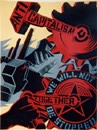

Submitted on Tue, 08/14/2012 - 11:24am
Imagery of the working class has long been monopolized by drawings of white, muscle-bound men swinging hammers, but the truth is that the majority of the working class has never been made up of white men. If we seek to create a movemet that captures the whole working class, the imagery that we choose should also reflect the whole of the working class.
Toward Gender Equality (TGE), a committee of the Portland IWW General Membership Branch is putting a call out for submissions for an art showing entitled, "We Are The Working Class." We hope to put together a collection of photos, posters and drawings that truly grasps the diversity of workers (and the work we do) that the working class is made up of.
Origninal Wobbly art would be of preference, but we won't be shy if it's from Wobbly supporters. We hope to have this exhibit up in time for the General Convention, and so are asking for submissions no later than August 20, 2012.
Email: Turniptheheat@gmail.com
Snail Mail:Portland IWW, C/O TGE, 2249 E Burnside St.Portland, OR 97214
Submitted on Sun, 04/01/2012 - 7:59pm
By Ryan G
Greetings IWW members,
This is a call for union members to help out an IWW shop in Portland, OR, the Red & Black Cafe. Last evening, someone threw a brick through one of the cafe windows with a hate message attached. Our fellow workers at the cafe, which is collectively owned and operated (and an IWW closed shop) need financial assistance in order to get the window replaced as soon as possible.
Please visit the cafe website at http://www.redandblackcafe.com/, where you can make a PayPal donation. Donations by check can be mailed to the cafe at 400 SE 12th Ave., Portland, OR 97214.
This union shop, which is a long time gathering point for the IWW in Portland, has been subjected to several acts of vandalism this year from unknown individuals. The cafe is a gathering space for unionists, anti-capitalists, and the radical community at large in the Portland area. We could use your help!
In solidarity,
Ryan G.
Portland IWW / IWW General Executive Board / Red&Black Cafe worker
Submitted on Sat, 08/13/2011 - 8:21pm
October 21, 22 & 23, 2011 : Portland, Oregon - Hosted by the Portland General Membership Branch of the I.W.W.
 The I.W.W. Food and Retail Workers Union is an organization of workers at every link in the supply chain of food and retail products- from processing facilities to warehouses to restaurants, cafes, grocery stores, strip malls, big box stores, and other retail shops. We have come together to fight for fundamental change in our industries. In the short term, we seek to build power with our coworkers to win improved wages, guaranteed hours, healthcare, and other crucial improvements to our working conditions. In the long term, we aim to establish industrial democracy through worker self-management of production for human needs, rather than capitalist
The I.W.W. Food and Retail Workers Union is an organization of workers at every link in the supply chain of food and retail products- from processing facilities to warehouses to restaurants, cafes, grocery stores, strip malls, big box stores, and other retail shops. We have come together to fight for fundamental change in our industries. In the short term, we seek to build power with our coworkers to win improved wages, guaranteed hours, healthcare, and other crucial improvements to our working conditions. In the long term, we aim to establish industrial democracy through worker self-management of production for human needs, rather than capitalist
Submitted on Mon, 02/14/2011 - 11:41am
 Fellow Workers,
Fellow Workers,
Some workers and wobblies in Portland, OR could really use some solidarity in the form of some phone calls.
The Portland branch of the Industrial Workers of the World (IWW), workers at Streetlight and Porchlight youth shelters, and workers form Harry's Mother (two Janus non-profit programs) began picketing in front of Janus Youth Program's main office at 707 NE Couch on February 7th. We are doing so because Janus is in contract negotiations with these two different IWW-represented shops, and in both of those contacts, there is an employee review panel which has been in place for a decade which gives workers the right to contest firings and have a no-cost review of those management decisions. Janus is now claiming they will not sign the contacts with those time-honored panels, and is refusing to give workers their pay increases, until workers accept binding arbitration instead of the peer review panel, which would cost the workers and the union potentially thousands of dollars they don't have.
More info and a press release are available at portlandiww.org
Please call this week (2/14-2/19) in the morning between 9am and 11am west coast time.
Call Janus's Main office, request to speak with Dennis Morrow. .
Email the executive director at dmorrow@janusyouth.org
And. their negotiating team which consists of a program director and a lawyer kdonegan@janusyouth.org, andrew@portlandemploymentlaw.com
We are looking to set a tone that is both polite and firm.
Here is a sample script,
Hello,
This is ________________________. I am calling in support of the union workers at Janus Youth. They deserve both the peer review panel and a decent wage. Do not deny the democratic oversight provided by the peer review panel and replace with a process that could cost workers and the program thousands of dollars. As a non-profit, you should use your money to help youth, not fight workers.
PDX Janus Picket Video & Interview - link
Submitted on Thu, 12/15/2005 - 11:04pm
By Matt Wilson, Portland - From the Stumptown Wobbly, reprinted in the Industrial Worker, December 2005
This is a story about a situation that happened at my workplace. Ideally, this will add to a conception of what Direct Unionism is, how it exists in everyday situations, and where we can go with it as an organization. This event happened around a year ago. While some of its impacts were immediate, it took me some time to develop an analysis, and to see clearly how this tied in with the development of class-consciousness. At this point I feel that I can look back, analyze the situation and draw out some lessons.
I worked on the sunrise shift at a parcel moving company represented by the Teamsters. At this company, and in this industry in general, every package is timed out to the last minute. Every day lost in not delivering a package costs this company money. The precision of the timing and the workers' role in maintaining the schedule furthers the opportunity for strategic opposition. This was especially true on my shift where the large majority of the packages being unloaded were on the last leg of their journey. These packages are going directly from us to the trucks that deliver things to your home.